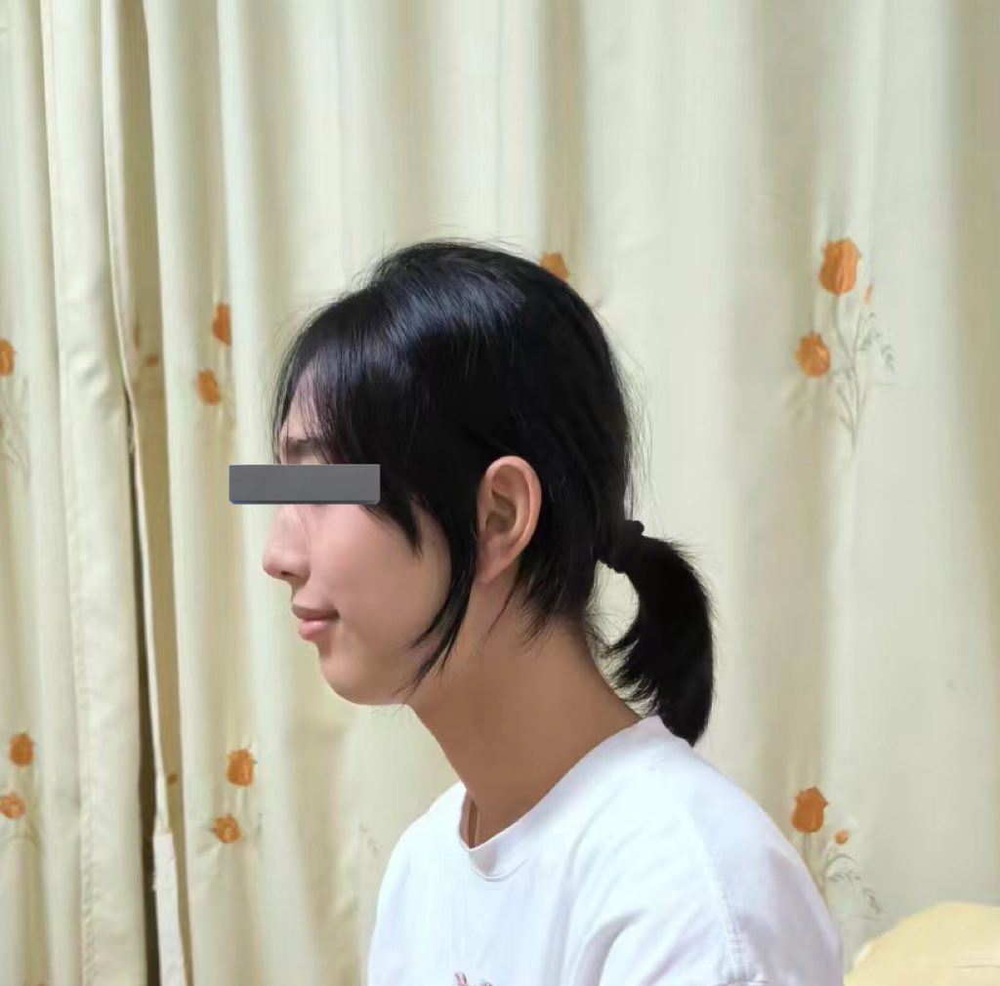

@Yuna_Kamisato 我去银行的话中行完全没有提任何有关性别的称呼，招行看身份证前绝对是小妹妹，刷脸是因为我经常弄丢身份证去重新拍照所以还是可以过的
电话是绝对叫我女士的，男性only的店我没去过，女装店也把我当女性顾客招待的（
而我也就这个丑样子（

电话是绝对叫我女士的，男性only的店我没去过，女装店也把我当女性顾客招待的（
而我也就这个丑样子（

说真的就这个程度而已我去银行办个业务就已经人证不符了…刷个脸半天都过不了
然后基本上只要不看身份证，对方的称呼一定是「女士/小姐」，打电话只要我先开口「您好哪位」对方也大概率直接「X女士」，去男士Only的店面，几个小哥哥看我进来都一脸懵逼，然后跟我说「这里不接待女士的」 https://t.co/VnEMwuW1gI
然后基本上只要不看身份证，对方的称呼一定是「女士/小姐」，打电话只要我先开口「您好哪位」对方也大概率直接「X女士」，去男士Only的店面，几个小哥哥看我进来都一脸懵逼，然后跟我说「这里不接待女士的」 https://t.co/VnEMwuW1gI